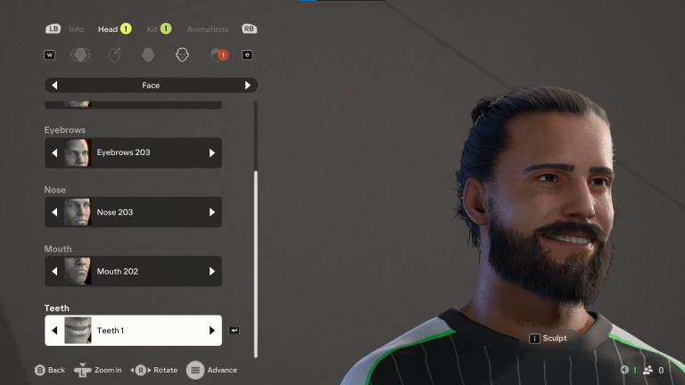

In-game character customization technology shipped in EA Sports FC 25.
EA announcement: Cranium Technology — EA Sports FC 25
[C++, Lua, Maya, Python]
Built a runtime system that loads the optimal runtime face rig asset for a user's sculpted face. The bucket test video below uses an internal playground tool that randomizes morph coefficients to generate random faces, verifying that the loaded blendshape asset responds correctly — including that a smiling pose keeps the lips lined up with no penetration or gaps.
Bucket test
Set up the runtime animation graph, adding idle animation on top of full-body animation, and a "show teeth" expression that plays when the user customizes teeth.
Early test — December 2023
Early test — October 2023